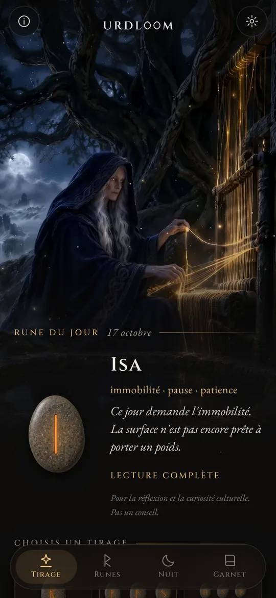
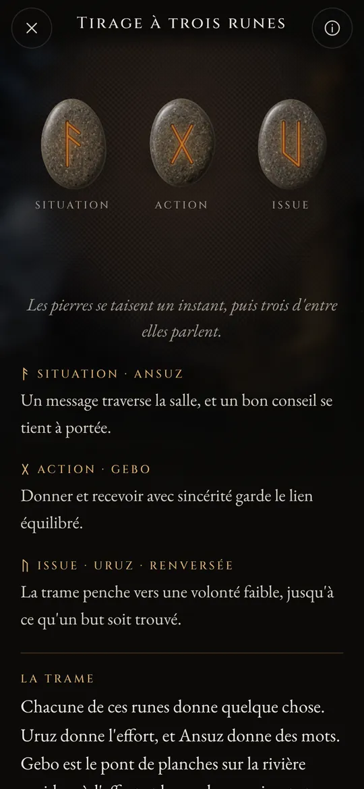
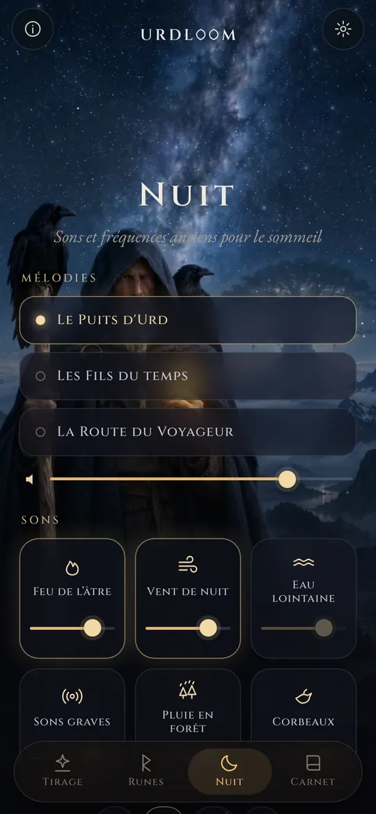
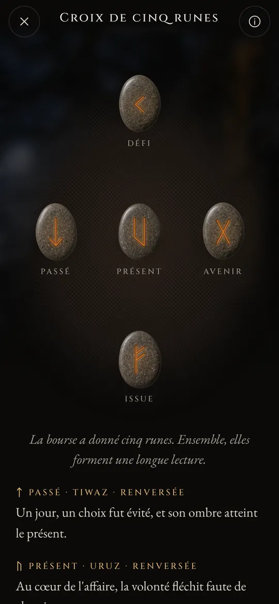

Lectures de runes au puits du destin.
Tire l’Elder Futhark, lis ce qui tombe dans la voix des anciens poèmes, et laisse les sons de la nuit te porter jusqu’au sommeil.


Trois femmes assises près d’un puits
Dans les anciens poèmes nordiques, trois Nornes siègent près d’un puits, sous Yggdrasil, l’arbre du monde. Elles arrosent ses racines, gravent des bâtons et fixent la vie de tous ceux qui naissent. L’aînée s’appelle Urd. Son nom désigne ce qui est advenu, et le puits porte son nom.
Urdloom tient son nom d’elle, et du métier sur lequel, disait-on, se tissait le destin. L’application garde cette atmosphère : une bourse de pierres dans ta main, une étoffe sur le sol, et des lectures écrites dans la voix des sagas plutôt que dans celle d’un horoscope.

De là viennent des jeunes filles, savantes en bien des choses, trois, du lac qui dort sous l’arbre.Völuspá, strophe 20
Tenir, secouer, lâcher
Tiens la bourse et les pierres s’entrechoquent dans ta main. Lâche-la et elles volent sur l’étoffe, roulent, s’immobilisent et se retournent une à une. La lecture apparaît en dessous.

Rune unique
Une seule pierre pour la journée qui s’ouvre, ou pour une question à laquelle on répond par oui ou par non. Touche, et elle est lancée.


Tirage à trois runes
Situation, action, issue. Les pierres se lisent de gauche à droite comme une courte saga, puis ensemble : un dernier fil montre comment les trois se répondent.

Croix de cinq runes
Passé, présent et avenir sur la ligne du milieu, le défi au-dessus et l’issue en dessous, et toi au cœur de tout cela.




Chaque lecture a été écrite à la main : les vingt-quatre runes, chaque paire et les 2 024 combinaisons de trois, dans chacune des vingt-deux langues. Rien n’est généré pendant que tu attends.

Les vingt-quatre runes
L’Elder Futhark est le plus ancien alphabet runique, gravé du IIe au VIIIe siècle environ. Ses vingt-quatre signes se répartissent en trois familles de huit, appelées ætts, chacune portant le nom du dieu dont la rune ouvre la série. Touche une pierre pour la lire.
L’ætt de Freyr
L’ætt de Hagal
L’ætt de Tyr
Les noms des runes gardent leur forme ancienne dans toutes les langues. Ce sont les noms des signes eux-mêmes, reconstitués par les savants à partir des poèmes runiques et des plus anciens alphabets.
Brève histoire des runes
Avant d’être quoi que ce soit d’autre, les runes sont des lettres. Les peuples germaniques les ont gravées dans le bois, l’os, le métal et la pierre pendant quelque quinze siècles. Voici comment les signes, et la vieille coutume du tirage au sort, sont parvenus jusqu’à nous.

Des sorts sur une étoffe blanche
L’historien romain Tacite écrit que les Germains coupent une branche d’arbre fruitier en petites baguettes, les marquent de signes et les éparpillent sur une étoffe blanche. Un prêtre ou le chef de famille en ramasse trois, l’une après l’autre, et les interprète. Il ne dit pas que ces signes étaient des runes, mais le geste est celui que garde Urdloom.
Les premières inscriptions
Un peigne en os découvert dans la tourbière de Vimose, au Danemark, porte l’une des plus anciennes inscriptions runiques connues, un seul mot : harja. Pointes de lance, fibules et amulettes des mêmes siècles montrent que l’écriture était déjà répandue dans tout le Nord.
Toute la série sur une pierre
Sur la pierre de Kylver, à Gotland, quelqu’un a gravé les vingt-quatre signes dans leur ordre, le plus ancien futhark complet que nous ayons. La série tire son nom de ses six premières lettres : f, u, th, a, r, k.
Les cornes d’or
L’une des deux cornes d’or de Gallehus, au Danemark, porte un vers allitératif : Moi, Hlewagastiz, fils de Holt, j’ai fait la corne. C’est l’un des plus anciens vers connus dans une langue germanique.
Seize signes pour l’âge viking
En Scandinavie, l’alphabet est réduit à seize signes, le futhark récent. Des milliers de pierres commémoratives sont dressées dans ses lettres, parmi lesquelles les grandes pierres de Jelling, au Danemark.
Les poèmes sont mis par écrit
Des scribes islandais mettent par écrit les poèmes eddiques. Dans la Völuspá, les Nornes siègent au puits d’Urd ; dans le Hávamál, Odin reste pendu neuf nuits à l’arbre battu des vents et saisit les runes en poussant un cri.
Un vers pour chaque rune
Des poèmes runiques de Norvège et d’Islande, avec un poème anglo-saxon plus ancien, donnent à chaque rune une courte strophe : le bétail sème la discorde entre parents, la grêle est le plus froid des grains, la glace est très glissante. Une grande part de ce que l’on sait du sens des runes vient de ces vers.
Lire à nouveau
Se servir des runes pour réfléchir est un renouveau moderne, bâti sur ces poèmes et sur les images des Eddas. Urdloom s’inscrit ouvertement dans cette tradition : il ne prétend pas être un oracle antique, seulement lire les signes anciens avec soin.

Sons et fréquences anciens pour le sommeil
Quand le jour s’achève, le voyageur sort sous les étoiles. Choisis une mélodie, pose des sons par-dessus et règle une minuterie. Les sons continuent écran éteint et s’estompent d’eux-mêmes.
Trois mélodies : Le Puits d'Urd, Les Fils du temps et La Route du Voyageur, portées par le chant de gorge, le tambour sur cadre et la tagelharpa jouée à l’archet.
Six couches à mélanger, chacune avec son propre volume : feu de l’âtre, vent de nuit, eau lointaine, sons graves, pluie en forêt et corbeaux.
Chaque son a été créé pour Urdloom. Rien n’est diffusé depuis internet.
Les petites choses qui comptent
- Une rune chaque matin
- Une pierre t’attend, face cachée, sur le premier écran. Si tu le souhaites, un petit mot te dit chaque matin quelle rune a été tirée pour toi.
- Un carnet
- Garde les lectures qui te parlent, avec la question que tu as posée.
- Des lectures à partager
- Envoie une lecture sous forme d’image : les pierres telles qu’elles sont tombées et les mots en dessous.
- Vingt-deux langues
- Chacune écrite et relue par des personnes qui la lisent, avec une police et une taille que tu peux changer.
Ce qui se passe ici reste ici
Urdloom fonctionne sans internet. Pas de compte, pas d’inscription, pas de publicité, et aucune analyse ni aucun suivi d’aucune sorte. Tes questions, tes lectures et ton carnet restent sur ton téléphone.
ConfidentialitéQuestions
Urdloom prédit-il l’avenir ?
Non. Les lectures invitent à la réflexion et à la curiosité culturelle. Elles indiquent une direction, comme le faisaient les anciennes runes, et le sens prend forme dans ta propre vie. Rien dans l’application ne constitue un conseil médical, financier, juridique ou tout autre conseil professionnel.
Pourquoi la langue sonne-t-elle si ancienne ?
Les runes viennent d’un monde de poèmes, de sagas et d’énigmes. Nous avons volontairement écrit les lectures dans cette voix et les avons gardées aussi proches que possible de la tradition runique, dans chaque langue.
Ai-je besoin d’une connexion internet ?
Non. Tout, des lectures aux sons de la nuit, se trouve dans l’application.
Quelles sont les langues disponibles ?
Anglais, turc, allemand, français, espagnol, italien, portugais, russe, ukrainien, polonais, néerlandais, suédois, norvégien, finnois, grec, arabe, hindi, indonésien, japonais, coréen, chinois et albanais.
Écris-nous
Une question, un mot qui sonne faux dans ta langue, ou une lecture qui ne t’a pas quitté : nous lisons chaque message.
support@urdloom.com